Schneeberichte
Tägliche Schneeberichte für Skifahrer: wo der Schnee liegt, was kommt und wo du fahren kannst, aus der SnowScope-Schneekarte und Messstationen. Jede Zahl stammt aus den Daten des Tages.
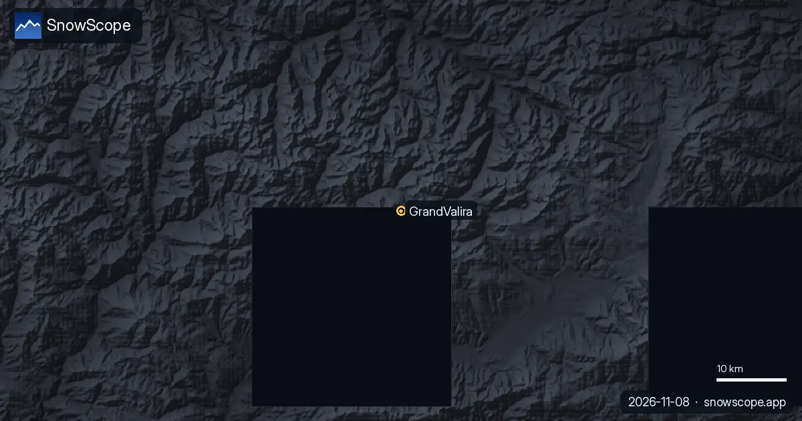
Andorra hat keinen großen Flughafen: So kommst du von Barcelona oder Toulouse nach Grandvalira, Envalira-Tunnel, CG2 und Parkplätze.
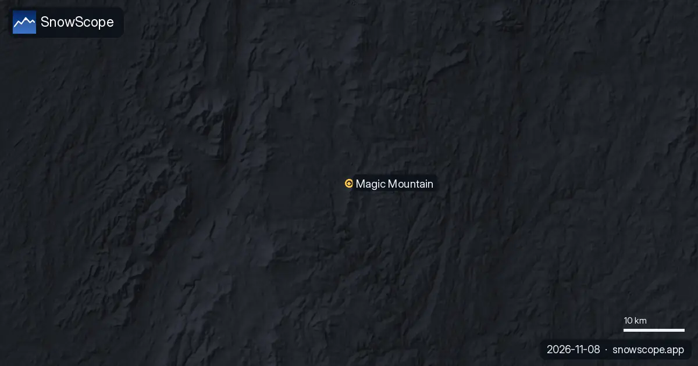
Magic Mountain in Londonderry, Vermont: ein unabhängiger Skiberg mit steilen Waldabfahrten, einem alten roten Sessellift und dünnem Naturschnee. Fünf Dinge, mit dem Schnee aus 46 vergangenen Wintern.

Fahr Revelstokes ganzen Höhenunterschied erst im Kopf: der Schnee am Gipfel, an der Bergmitte und unten im Tal in 46 vergangenen Wintern, und wann jeder Teil am besten ist.

Sieben Tage in der Silvretta Arena, einer nach dem anderen: wo der Schnee liegt, wann man nach Samnaun fährt und was 46 vergangene Winter über Ischgls Schnee auf drei Höhen sagen.
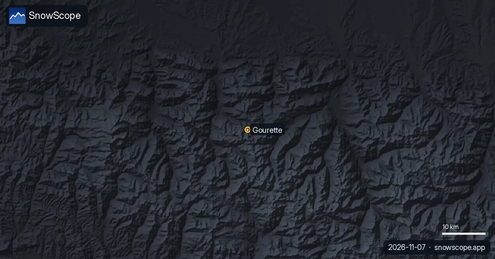
Gourette und Cauterets im Vergleich: Höhen, üblicher Schnee pro Monat, die besten Wochen und die Anreise, aus 46 vergangenen Wintern.

Mad River Glen, Vermont: Naturschnee, etwa 30 in (75 cm) übliches Maximum an der Mittelstation in 46 vergangenen Wintern, Februar am tiefsten. Drei Pläne für einen Tag dort.
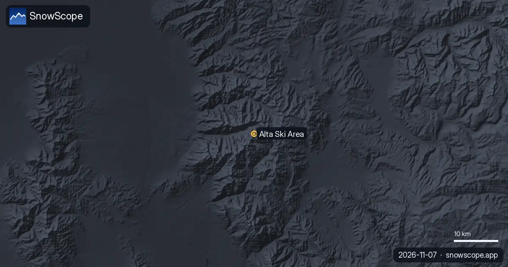
Alta, Utah, in Fragen: etwa 109 in (276 cm) übliches Maximum an der Mittelstation in 46 vergangenen Wintern, warum nur Skifahrer, wann hin und wie hinauf.
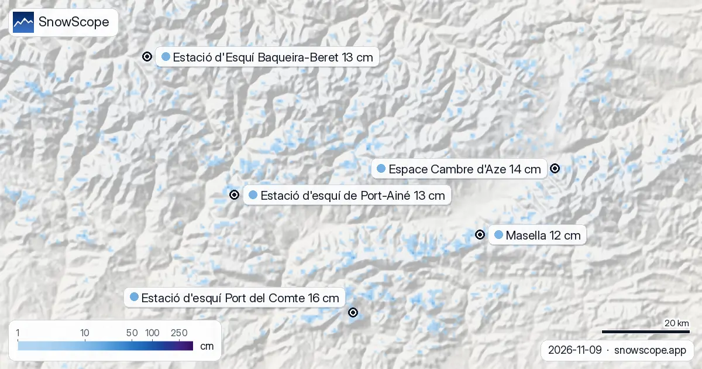
Der Schnee von heute in den Pyrenäen deutet laut unserem Modell und unserer Prognose auf dünner Schnee zum Saisonstart und milde Luft, die einen …
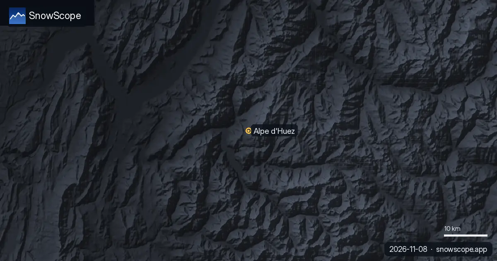
Alpe d'Huez liegt zur Sonne. So plant man den Tag nach Uhrzeit und Höhe, mit dem Schnee von 46 vergangenen Wintern von den tiefen Dörfern bis zum Pic Blanc.
Unsere 46-Winter-Reihe in den Alpen, 108 Punkte von 667 bis 3.872 m: überall weniger Schneetage, deutlich an 81 %. Was sich je Höhe änderte und warum.

Auf der Höhe von Oukaïmeden zeigt unsere 46-Winter-Reihe 12 % weniger Schneetage; weiter unten geht das Signal in großen Schwankungen unter.
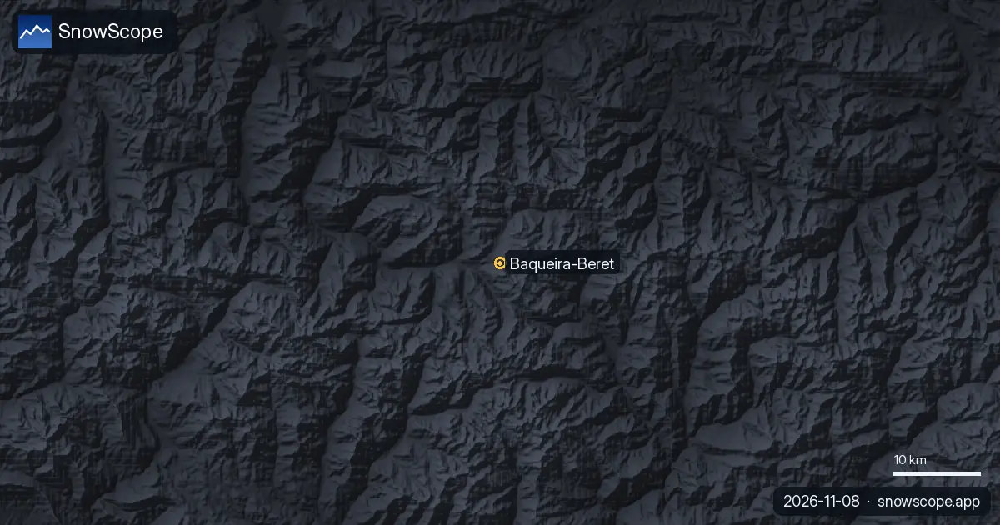
Baqueira-Beret liegt im Val d'Aran, auf der Atlantikseite der Pyrenäen. Was das für den Schnee bedeutet, geprüft an 46 vergangenen Wintern im Vergleich mit La Molina, und wann man fahren sollte.
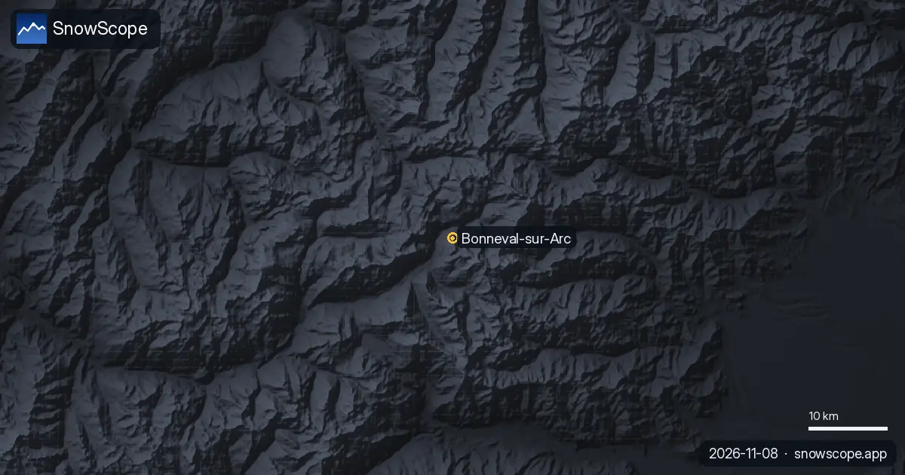
Ein Porträt von Bonneval-sur-Arc in der Haute-Maurienne: Steindächer, ein gesperrter Pass, ein kleines Skigebiet und erstaunlich viel Schnee, aus 46 vergangenen Wintern unserer Schneehistorie.
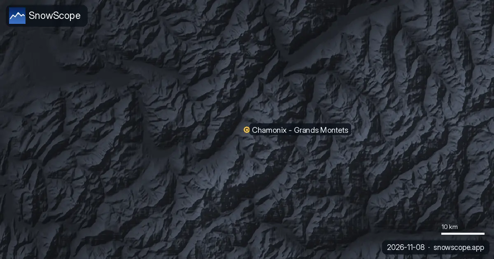
So verbringst du den ersten Skitag in Chamonix, von den Grands Montets über Argentière bis zur richtigen Stunde für jeden Hang, mit 46 Wintern Schneedaten.
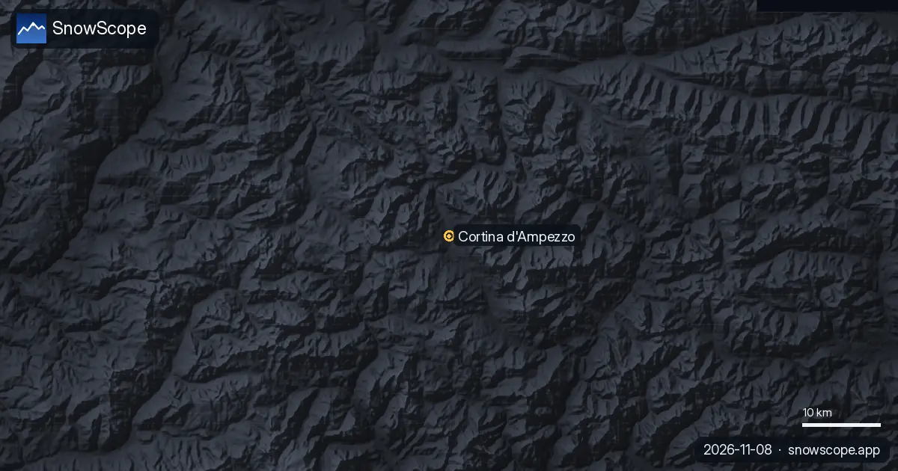
Cortina d'Ampezzo auf drei Arten: Tofana, Faloria-Cristallo und Cinque Torri-Lagazuoi, mit 46 Wintern Schneedaten auf drei Höhen.
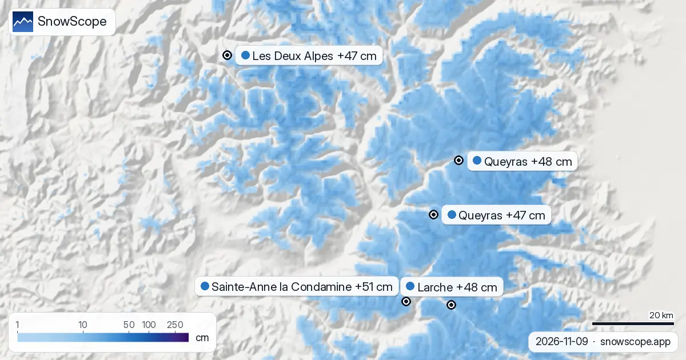
Unsere tägliche Tabelle der Skigebiete mit dem meisten prognostizierten Neuschnee für die nächsten 24 Stunden und bis zum 12. November, in Europa, …
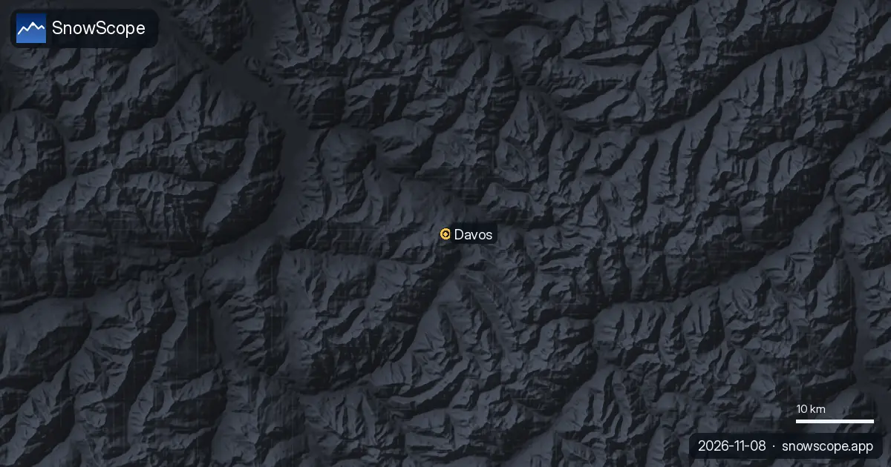
Davos und Klosters teilen sich sechs Skiberge. Ein Plan Tag für Tag, beginnend auf der Parsenn, mit dem, was 46 vergangene Winter unserer Schneehistorie über ihre Höhen sagen.
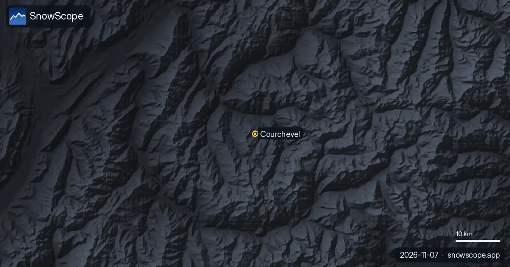
Wann Courchevel und die 3 Vallées buchen, welches Dorf wählen und wo der Schnee hält, geplant aus 46 vergangenen Wintern.

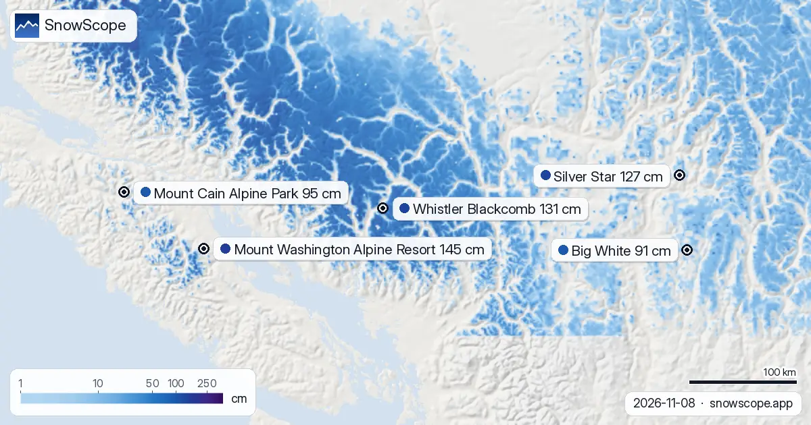
Mount Washington Alpine Resort (Kanada) hat heute den meisten Schnee in Westkanada, mit etwa 145 cm in den oberen Hängen. Es folgen Whistler …

Liegt mehr Schnee als vor einem Jahr? Wir haben heute mit dem 8. November des letzten Winters in 4 Skigebieten in den Alpen verglichen: 0 davon haben …

Die Schneefläche wuchs von 0 sq mi (0 km²) am 6. November auf heute 788 sq mi (2.040 km²), und unsere Prognose ergibt 104 sq mi (270 km²) am 11. …
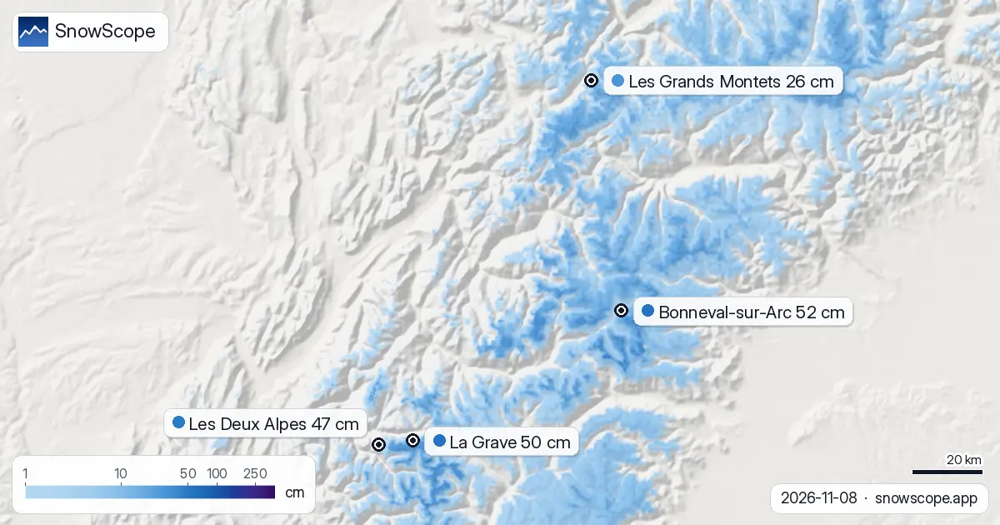
50 cm in den oberen Hängen: Deshalb steht La Grave oben auf unserer Liste. Wir haben Schneehöhe, Neuschnee der letzten 72 Stunden und Prognose …
Weniger Schneetage an allen 120 Punkten in den Pyrenäen seit 1980-81, am stärksten unter 1.500 m: unsere 46-Winter-Reihe und die Forschung dazu.
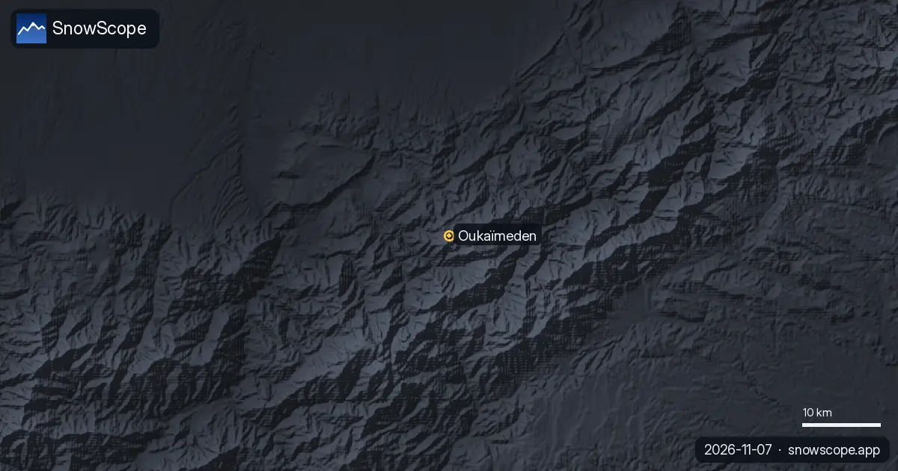
Ein praktisches Notizbuch zu Oukaïmeden im Hohen Atlas: wann der Schnee meist kommt, wie viel, welche Hänge und die Anreise ab Marrakesch.
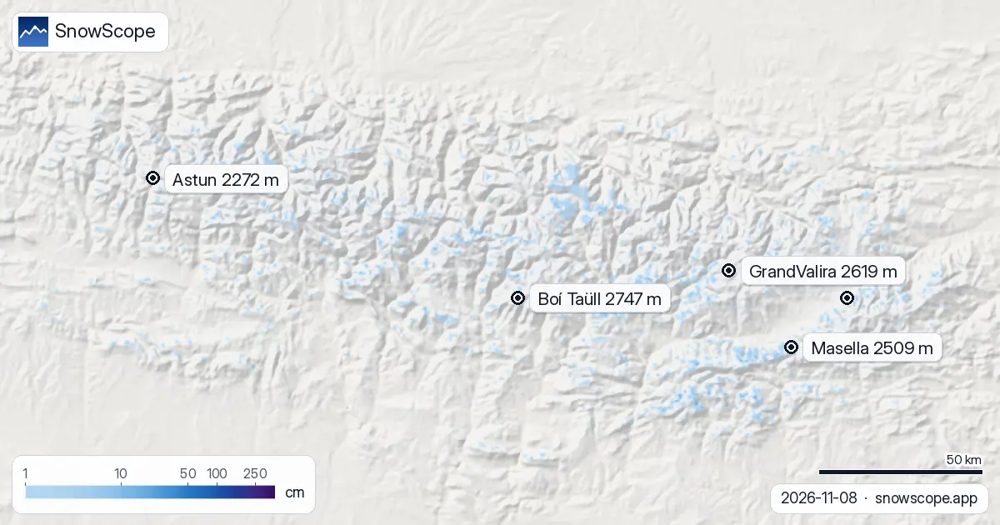
Unsere Prognose sieht die Nullgradgrenze in den Pyrenäen in den nächsten Tagen zwischen 2.610 m und 3.840 m. In den wärmsten Stunden erreicht die …
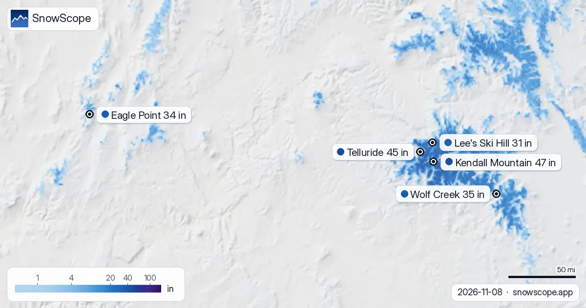
Telluride Schneedecke: 45 in Auflage in den oberen Hängen (8. November). Am meisten Schnee im US-Westen liegt in Kendall Mountain: etwa 47 in …
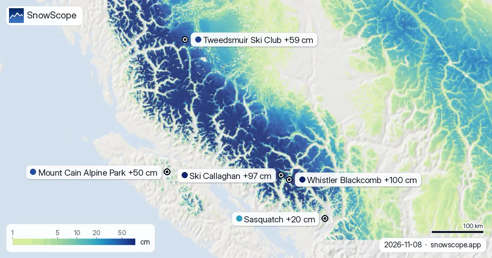
Whistler Blackcomb bekam in den letzten 72 Stunden 100 cm Neuschnee, davon 68 cm in den letzten 24 Stunden. Jetzt liegen dort laut unserem …
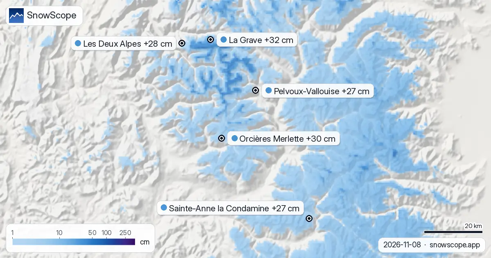
Unsere tägliche Tabelle der Skigebiete mit dem meisten prognostizierten Neuschnee für die nächsten 24 Stunden und bis zum 11. November, in Europa, …
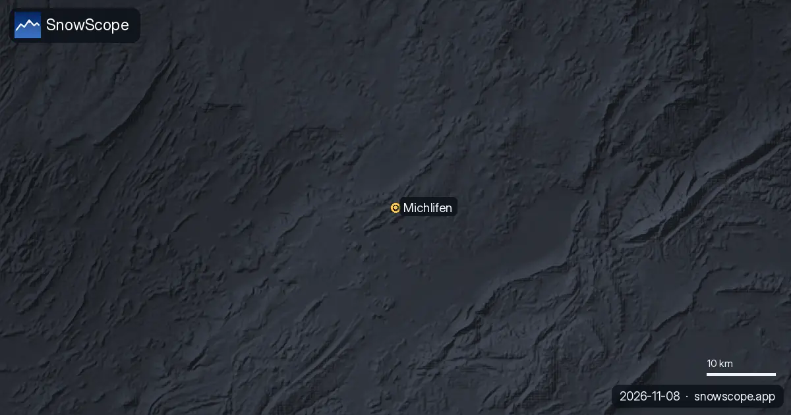
Michlifen bei Ifrane hat Schnee in kurzen Episoden statt einer Saison. Was 46 vergangene Winter zeigen, warum die übliche Höhe null ist und wie man an den richtigen Tagen dort ist.
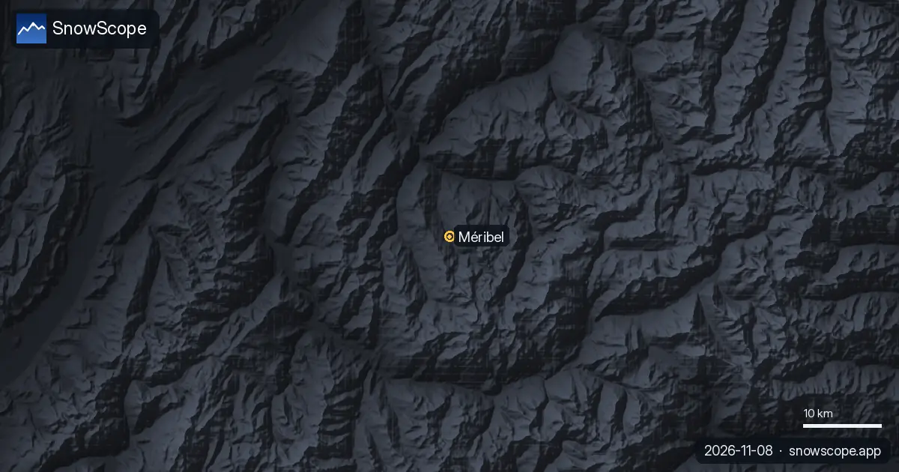
Drei Arten, einen Tag ab Méribel zu verbringen: nach Osten nach Courchevel, nach Süden Richtung Val Thorens oder daheim am Mont Vallon, mit dem Schnee von 46 vergangenen Wintern auf drei Höhen.

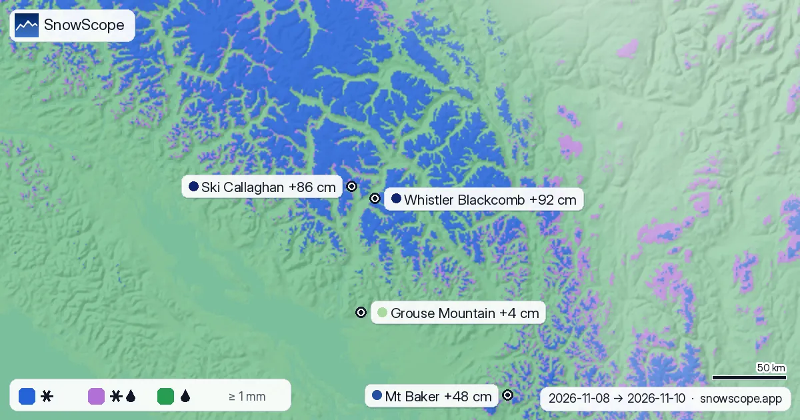
Ein feuchter Pazifiksturm: 92 cm Neuschnee auf Whistlers oberen Pisten vom 8. bis 10. November, Regen unterhalb von etwa 1.620 m.
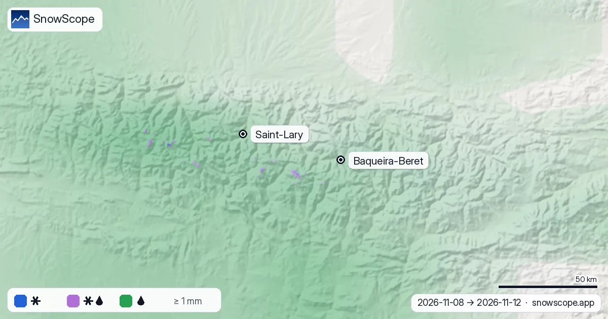
0 cm auf 2.052 m am 7. November, wie in vielen vergangenen Wintern. Der letzte Winter erreichte maximal 100,6 cm. Interaktive Grafik und Daten.
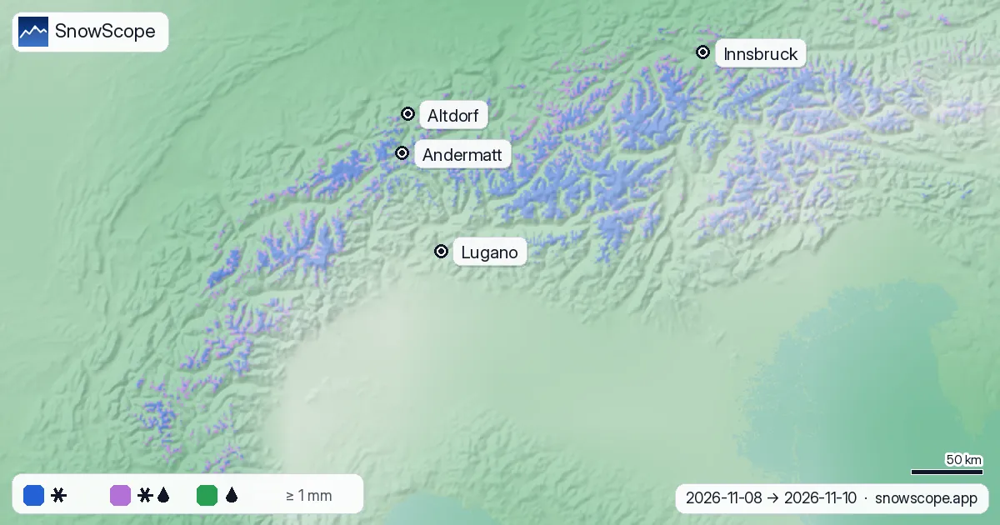
Milde Luft bei den nächsten Niederschlägen: Die Schneefallgrenze liegt meist zwischen 2.190 und 2.850 m. Karte, Diagramm und Animation.
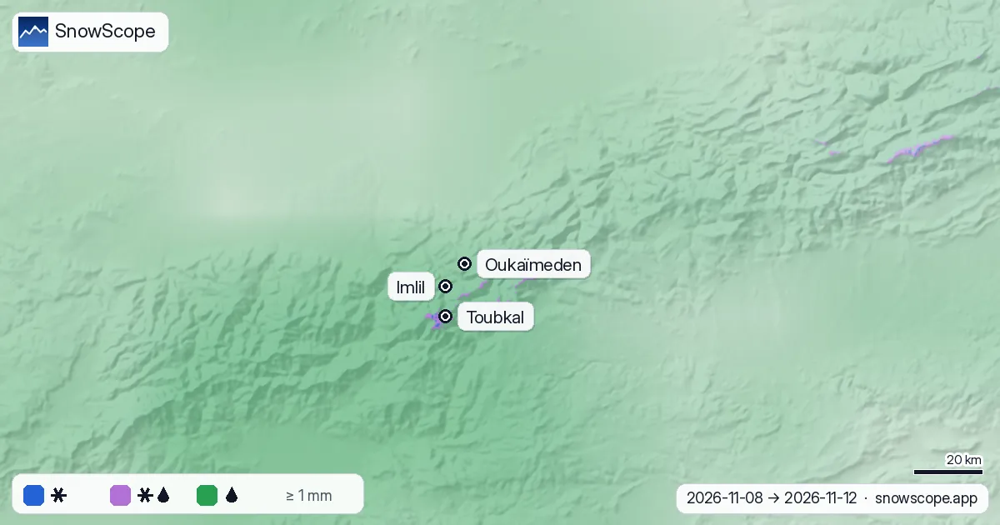
Schneefallgrenze nahe 3.710 m vom 8. bis 12. November: Regen in Oukaïmeden und Imlil, Schnee auf dem Gipfel des Toubkal. Karte und Grafik.
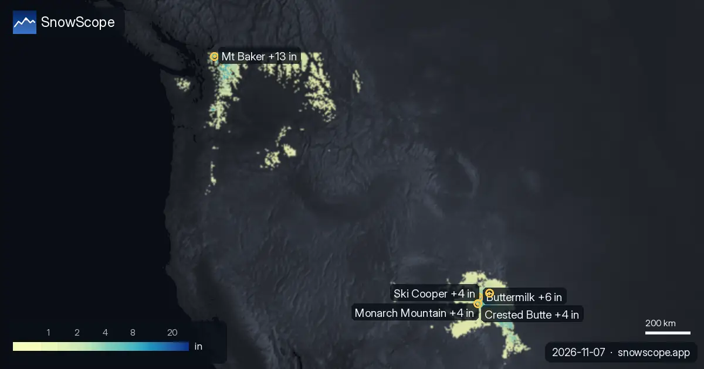
Mt Baker bekam in den letzten 72 Stunden 13 in (32 cm) Neuschnee, davon 1 in (3 cm) in den letzten 24 Stunden. Jetzt liegen dort laut unserem …
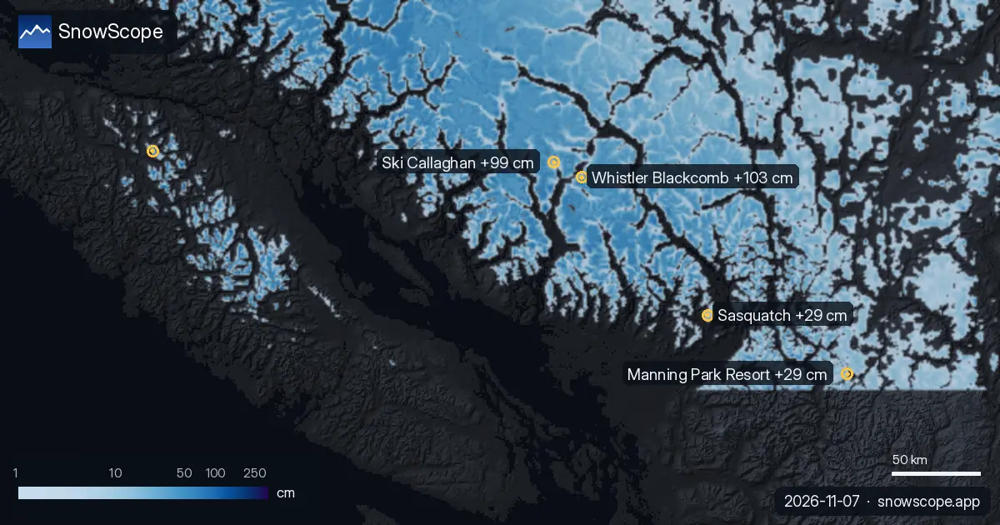
Bis zum 10. November ergibt unsere Prognose 103 cm in Whistler Blackcomb, 99 cm in Ski Callaghan und 74 cm in Mount Cain Alpine Park. Die Werte der …
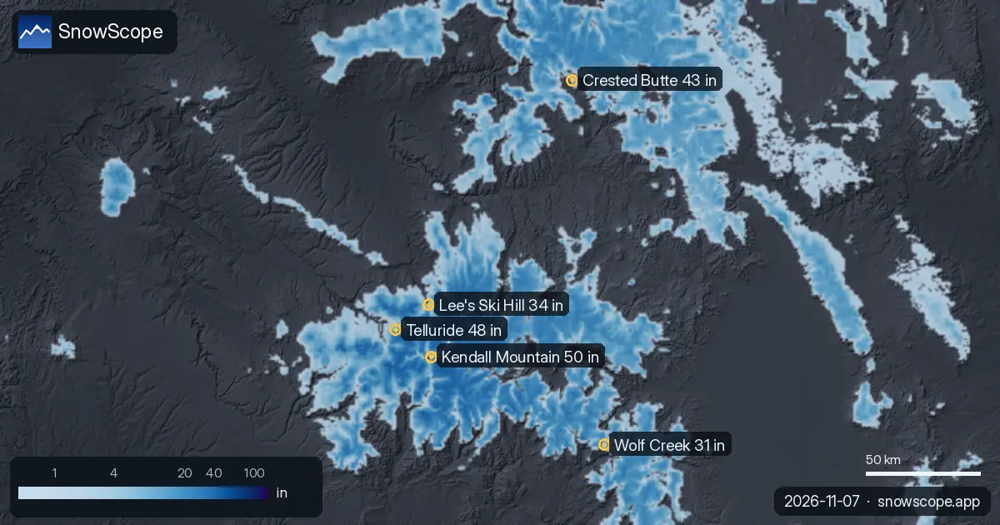
Am meisten Schnee im US-Westen liegt in Kendall Mountain: etwa 50 in (127 cm) in den oberen Hängen, laut unserem Schneemodell. Danach kommen …
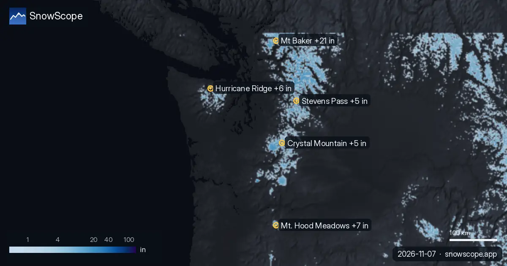
Bis zum 10. November ergibt unsere Prognose 21 in (53 cm) in Mt Baker, 7 in (18 cm) in Mt. Hood Meadows und 6 in (14 cm) in Hurricane Ridge. Die …
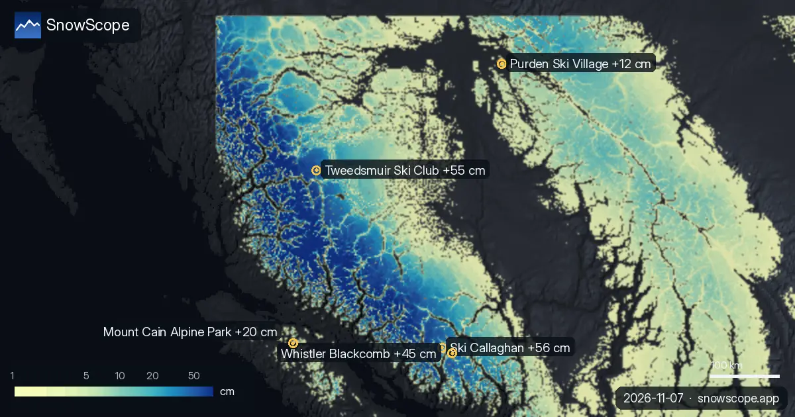
Ski Callaghan bekam in den letzten 72 Stunden 56 cm Neuschnee, davon 9 cm in den letzten 24 Stunden. Jetzt liegen dort laut unserem Schneemodell etwa …
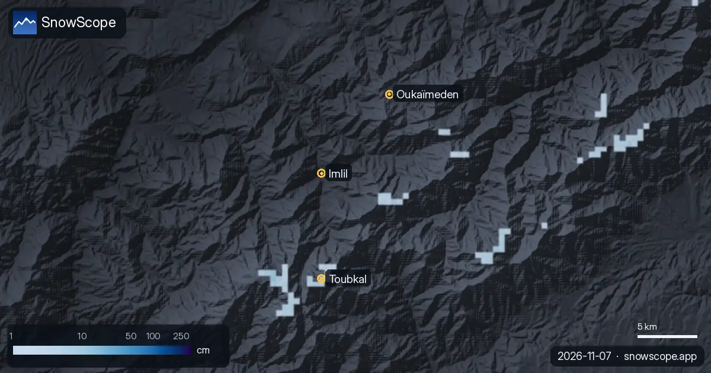
Rund 65 mm am Toubkal bis 12. November, aber die Nullgradgrenze bleibt bei etwa 4.000 m: Regen in Oukaïmeden und in den Tälern, Schnee nur ganz oben.

Bis zum 10. November ergibt unsere Prognose 36 cm in Orcières Merlette, 33 cm in Les Deux Alpes und 32 cm in La Grave. Die Werte der Skigebiete sind …
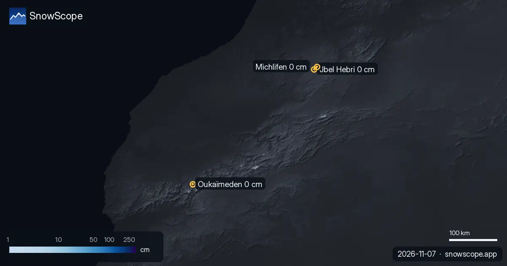
Die Skigebiete im Atlas haben heute keinen Schnee auf den Pisten. Unser Schneemodell findet nur auf den höchsten Gipfeln Schnee: etwa 80 km² …

Wir haben den Schnee von heute in 3 Skigebieten in den Alpen mit demselben Datum in jedem der letzten 46 Winter verglichen. 0 liegen deutlich über …
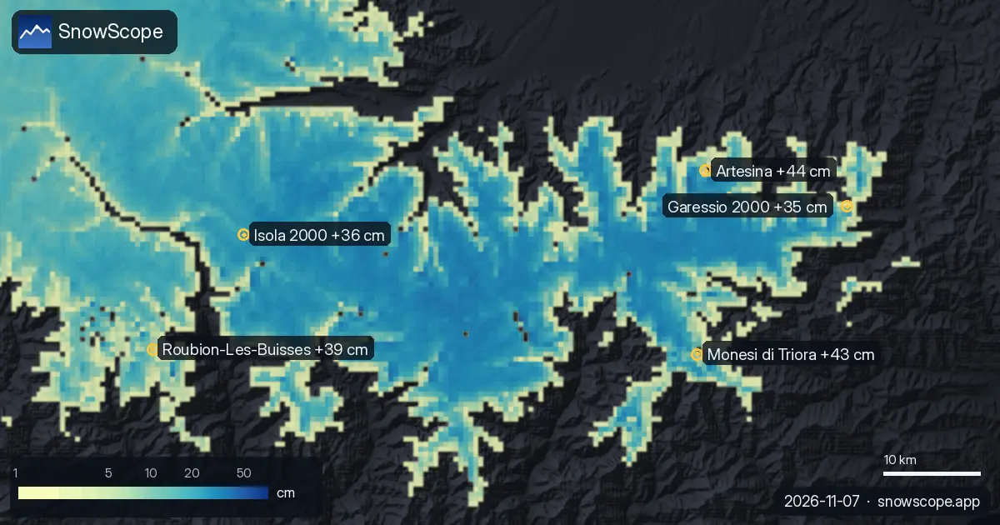
Artesina bekam in den letzten 72 Stunden 44 cm Neuschnee. Jetzt liegen dort laut unserem Schneemodell etwa 20 cm in den oberen Hängen.

Estació d'esquí Port del Comte (Spanien) hat heute den meisten Schnee in den Pyrenäen, mit etwa 29 cm in den oberen Hängen. Es folgen Aramón Cerler …

Unsere tägliche Tabelle der Skigebiete mit dem meisten prognostizierten Neuschnee für die nächsten 24 Stunden und bis zum 10. November, in Europa, …
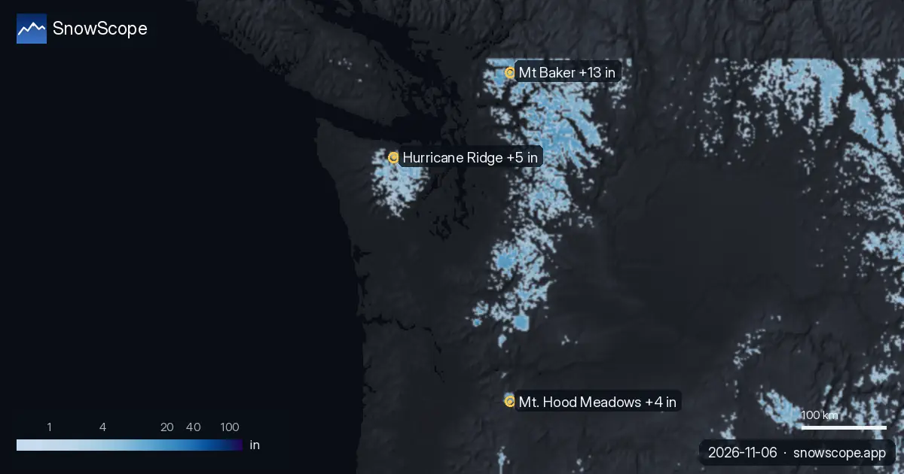
Bis zum 9. November ergibt unsere Prognose 13 in (33 cm) in Mt Baker, 5 in (12 cm) in Hurricane Ridge und 4 in (10 cm) in Mt. Hood Meadows. Die Werte …
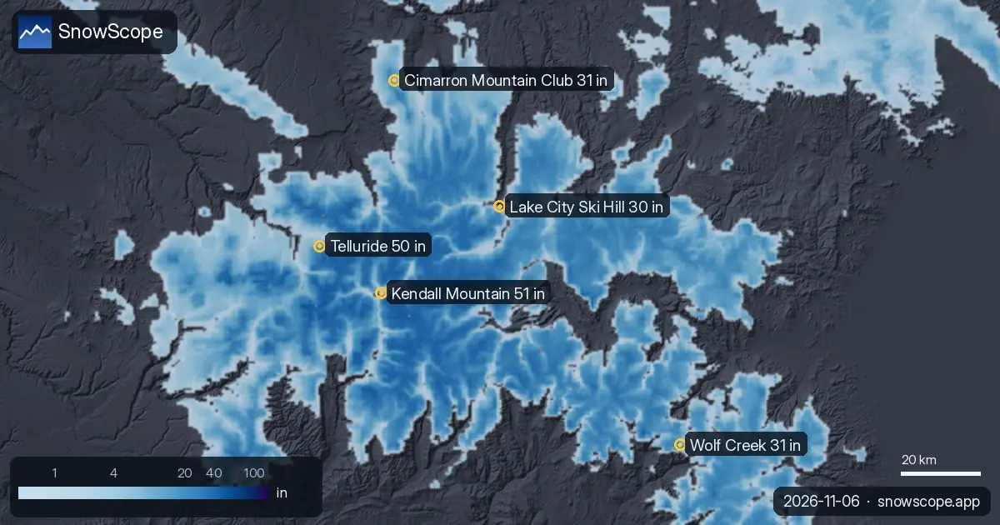
Wir haben den Schnee von heute in 5 Skigebieten im US-Westen mit demselben Datum in jedem der letzten 46 Winter verglichen. 3 liegen deutlich über …

Ski Callaghan bekam in den letzten 72 Stunden 44 cm Neuschnee, davon 32 cm in den letzten 24 Stunden. Jetzt liegen dort laut unserem Schneemodell …
Mt Baker bekam in den letzten 72 Stunden 11 in (27 cm) Neuschnee, davon 4 in (11 cm) in den letzten 24 Stunden. Jetzt liegen dort laut unserem …

Bis zum 9. November ergibt unsere Prognose 4 in (11 cm) in Ski Eldorado und 4 in (10 cm) in Tuckerman Ravine. Die Werte der Skigebiete sind …
Bis zum 9. November ergibt unsere Prognose 74 cm in Whistler Blackcomb, 63 cm in Ski Callaghan und 50 cm in Mount Cain Alpine Park. Die Werte der …
Oukaimden (Marokko) hat heute den meisten Schnee im Atlas (Marokko), mit etwa 1 cm in den oberen Hängen. Es folgen Habri mit 0 cm und Michlifen mit …
Wir haben Schneehöhe, Neuschnee der letzten 72 Stunden und Prognose kombiniert und Isola 2000, Artesina und Bonneval-sur-Arc ausgewählt. Von diesen …

Wir haben den Schnee von heute in 4 Skigebieten in den Pyrenäen mit demselben Datum in jedem der letzten 46 Winter verglichen. 1 liegen deutlich über …

Bonneval-sur-Arc (Frankreich) hat heute den meisten Schnee in den Alpen, mit etwa 52 cm in den oberen Hängen. Es folgen La Grave mit 52 cm und Orelle …
Wir haben Schneehöhe, Neuschnee der letzten 72 Stunden und Prognose kombiniert und Aramón Cerler, Rasos de Peguera und Masella ausgewählt. Von diesen …
Isola 2000 bekam in den letzten 72 Stunden 62 cm Neuschnee, davon 7 cm in den letzten 24 Stunden. Jetzt liegen dort laut unserem Schneemodell etwa …
Unsere tägliche Tabelle der Skigebiete mit dem meisten prognostizierten Neuschnee für die nächsten 24 Stunden und bis zum 9. November, in Europa, …
Die Skigebiete im Atlas haben heute keinen Schnee auf den Pisten. Unser Schneemodell findet nur auf den höchsten Gipfeln Schnee: etwa 60 km² …
In den letzten 72 Stunden gab es in den Alpen erhebliche Schneefälle, wobei Isola 2000 bis Donnerstag, den 5. November 2026, 58 cm Neuschnee meldete.
Bis zum 8. November ergibt unsere Prognose 21 cm in Saas Grund, 18 cm in Grindelwald und 18 cm in Pescegallo. Die Werte der Skigebiete sind …
Wir haben Schneehöhe, Neuschnee der letzten 72 Stunden und Prognose kombiniert und Artesina, Isola 2000 und Riserva Bianca ausgewählt. Von diesen …
Rasos de Peguera bekam in den letzten 72 Stunden 15 cm Neuschnee. Jetzt liegen dort laut unserem Schneemodell etwa 20 cm in den oberen Hängen.
Wir haben Schneehöhe, Neuschnee der letzten 72 Stunden und Prognose kombiniert und Rasos de Peguera, Aramón Cerler und Masella ausgewählt. Von diesen …
Am meisten Schnee im US-Westen liegt in Kendall Mountain: etwa 51 in (130 cm) in den oberen Hängen, laut unserem Schneemodell. Danach kommen …
Bis zum 8. November ergibt unsere Prognose 17 in (42 cm) in Mt Baker und 5 in (13 cm) in Hurricane Ridge. Die Werte der Skigebiete sind …
Wir haben Schneehöhe, Neuschnee der letzten 72 Stunden und Prognose kombiniert und Kendall Mountain, Telluride und Mt Baker ausgewählt. Von diesen …
Am meisten Schnee in Westkanada liegt in Silver Star: etwa 112 cm in den oberen Hängen, laut unserem Schneemodell. Danach kommen Big White (90 cm) …
Bis zum 8. November ergibt unsere Prognose 94 cm in Whistler Blackcomb, 93 cm in Ski Callaghan und 70 cm in Tweedsmuir Ski Club. Die Werte der …
Unser Schneemodell für den 5. November 2026 prognostiziert bis Sonntag bis zu 94 cm Neuschnee in Westkanada, mit erheblichem Schneefall auch in den Alpen und im Westen der USA.

Am meisten Schnee in den Alpen liegt in Terenten: etwa 73 cm in den oberen Hängen, laut unserem Schneemodell. Danach kommen Speikboden (50 cm) und …
Wir haben den Schnee von heute in 3 Skigebieten in den Alpen mit demselben Datum in jedem der letzten 46 Winter verglichen. 0 liegen deutlich über …
Wir haben Schneehöhe, Neuschnee der letzten 72 Stunden und Prognose kombiniert und Crissolo, Prali und La Grave ausgewählt. Von diesen Skigebieten …
Wir haben den Schnee von heute in 4 Skigebieten in den Pyrenäen mit demselben Datum in jedem der letzten 46 Winter verglichen. 1 liegen deutlich über …

Wir haben Schneehöhe, Neuschnee der letzten 72 Stunden und Prognose kombiniert und Masella, Cauterets Cirque du Lys und Aramón Cerler ausgewählt. Von …
Telluride bekam in den letzten 72 Stunden 12 in (31 cm) Neuschnee, davon 1 in (3 cm) in den letzten 24 Stunden. Jetzt liegen dort laut unserem …
Am meisten Schnee im US-Westen liegt in Kendall Mountain: etwa 48 in (122 cm) in den oberen Hängen, laut unserem Schneemodell. Danach kommen …
Bis zum 7. November ergibt unsere Prognose 17 in (44 cm) in Mt Baker, 6 in (14 cm) in Crystal Mountain und 6 in (14 cm) in Stevens Pass. Die Werte …
Bis zum 7. November ergibt unsere Prognose 48 cm in Ski Callaghan, 47 cm in Whistler Blackcomb und 34 cm in Mount Cain Alpine Park. Die Werte der …

Wir haben Schneehöhe, Neuschnee der letzten 72 Stunden und Prognose kombiniert und Mount Cain Alpine Park, Whistler Blackcomb und Silver Star …

Unsere tägliche Tabelle der Skigebiete mit dem meisten prognostizierten Neuschnee für die nächsten 24 Stunden und bis zum 7. November, in Europa, …
Welche Skigebiete haben fast immer Schnee? Wir haben 46 vergangene Winter (1980-81–2025-26) für jedes Skigebiet unserer Karte ausgewertet und die …
Kope bekam in den letzten 72 Stunden 21 cm Neuschnee. Jetzt liegen dort laut unserem Schneemodell etwa 11 cm in den oberen Hängen.

Am meisten Schnee in den Alpen liegt in Bonneval-sur-Arc: etwa 55 cm in den oberen Hängen, laut unserem Schneemodell. Danach kommen Schnalstal …

Bis zum 6. November ergibt unsere Prognose 37 cm in Chabanon, 34 cm in Dévoluy und 33 cm in Chaillol. Die Werte der Skigebiete sind Modellschätzungen …
Oukaimden bekam in den letzten 72 Stunden 14 cm Neuschnee, davon 5 cm in den letzten 24 Stunden. Jetzt liegen dort laut unserem Schneemodell etwa …
Rasos de Peguera bekam in den letzten 72 Stunden 17 cm Neuschnee, davon 17 cm in den letzten 24 Stunden. Jetzt liegen dort laut unserem Schneemodell …

Wir haben Schneehöhe, Neuschnee der letzten 72 Stunden und Prognose kombiniert und Masella, Estació d'esquí de Port-Ainé und Cauterets Cirque du Lys …

Silverton Mountain bekam in den letzten 72 Stunden 26 in (66 cm) Neuschnee. Jetzt liegen dort laut unserem Schneemodell etwa 52 in (131 cm) in den …
Am meisten Schnee im US-Westen liegt in Kendall Mountain: etwa 53 in (134 cm) in den oberen Hängen, laut unserem Schneemodell. Danach kommen …
Wir haben Schneehöhe, Neuschnee der letzten 72 Stunden und Prognose kombiniert und Silverton Mountain, Telluride und Lee's Ski Hill ausgewählt. Von …
Am meisten Schnee in Westkanada liegt in Big White: etwa 91 cm in den oberen Hängen, laut unserem Schneemodell. Danach kommen Silver Star (84 cm) und …
Bis zum 6. November ergibt unsere Prognose 33 cm in Ski Callaghan, 31 cm in Mount Cain Alpine Park und 25 cm in Whistler Blackcomb. Die Werte der …

Unsere tägliche Tabelle der Skigebiete mit dem meisten prognostizierten Neuschnee für die nächsten 24 Stunden und bis zum 6. November, in Europa, …
Schnee am 3. November 2026: Kendall Mountain 53 in (134 cm) nach einem Sturm, Big White 91 cm, die Alpen bis 55 cm in Bonneval-sur-Arc. Modell- und Messdaten.